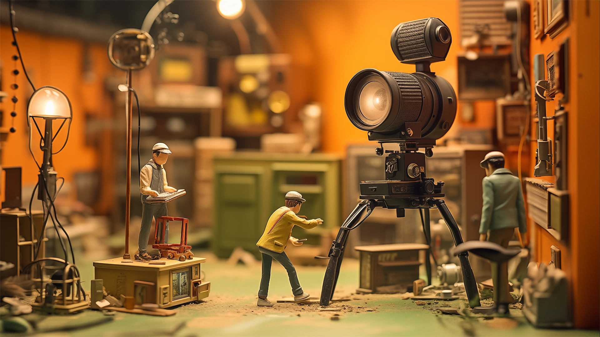
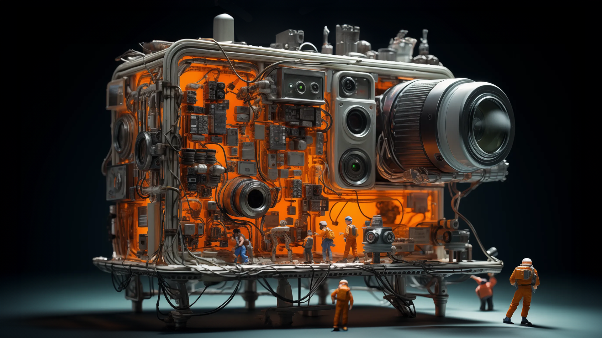
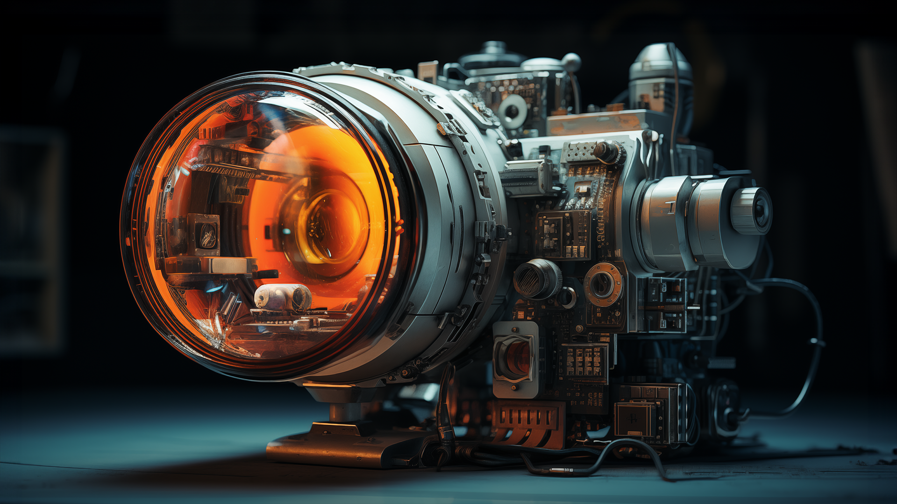

a world where artificial intelligence has been weaving its way into various industries, photography stands as a fascinating case study of the harmonious marriage between human creativity and technological advancement. From the invention of the camera to modern AI-powered editing tools, the journey of photography has been a remarkable tale of innovation and evolution. While some photographers and enthusiasts eagerly embrace the latest rise of AI, others are still sitting on the fence, waiting to see how the exploration of its implications on photography services unfold.
The dynamic relationship between AI and photography has been on our radar throughout the past year and it’s time we’ll address our take on it. Dive in with us to find out why photographers remain irreplaceable, what are the more vulnerable photography services, how AI can enhance photographers' skills, and the future trajectory of AI in photography.
Photography, often dubbed as "painting with light", has a rich history that precedes the digital age. From the first camera obscura to the daguerreotype, each milestone paved the way for capturing moments in time. The transition from film to digital sensors marked a significant turning point, allowing for rapid image acquisition and manipulation. The rise of smartphones, accompanied by the initial fear that camera phones would replace photographers, shook the industry and redefined how we perceive and create images. The emergence of AI in photography builds upon this foundation, promising revolutionary changes.
As AI continues its expansion into the realm of photography, certain domains appear more susceptible to disruption than others. For instance, the rise of AI-generated portraits based on individuals' latest selfies and its utilization by brands to seamlessly integrate products into various lifestyle environments and alongside models has been evident. This AI-powered automation offers efficiency and convenience, allowing quick content generation with minimal manual effort.
However, despite these advancements, certain niches within photography remain human-dependent. Portrait photography, in particular, thrives on the rapport between the subject and the photographer. The human touch, the ability to connect with emotions, and the knack for capturing a person's essence in a single frame are irreplaceable by AI introducing ‘the real you’ is still priceless. Similarly, event photography necessitates the skills of a real-life photographer to capture fleeting moments, genuine interactions, and the ambiance of the occasion.
Furthermore, the benefits of producing product photographs in a real environment, using actual models, are substantial. While AI-generated product images can be convenient, they often lack the authenticity that resonates with consumers. Authenticity is a driving force in modern consumer preferences, and photographs that genuinely reflect a product's features in real-life scenarios hold a distinct advantage. A product photoshoot in a real environment not only captures the product's attributes but also imbues it with a relatable context, making it easier for consumers to envision its integration into their own lives.
While AI is reshaping certain aspects of photography services, its reach remains limited in replicating the emotional depth and the authenticity of real-life scenarios. Photographers' ability to connect with subjects, capture genuine emotions, and craft narratives through their lenses, safeguards their relevance. Moreover, the authenticity and relatability conveyed through photographs shot in genuine environments continue to be a driving force in consumer engagement. As AI and human photographers coexist, they amplify each other's strengths, resulting in a more vibrant and diverse photography landscape.
The trajectory of AI in photography holds promising yet cautious prospects. As AI algorithms continue to learn from vast datasets, they may achieve a level of creativity that closely mirrors human imagination. Future developments could see AI creating entirely novel visual styles and pushing the boundaries of artistry.
However, ethical concerns such as authenticity, privacy, and copyright loom large. The widespread availability of AI tools might lead to a blurring of lines between originality and algorithmic assistance. Striking a balance between technological assistance and preserving the integrity of the art form will be crucial in this evolving landscape.
The saga of AI in photography is one of synergy rather than substitution. As long as photographers do not fear the future, the same way they knew how to embrace technology over the years, their adaptability, intuition, and emotional resonance ensure their irreplaceability in an ever-evolving technological landscape. While AI's role in automating certain tasks is undeniable, its true potential lies in enhancing human creativity and offering new dimensions to artistic expression. As we gaze into the future, the story of AI in photography promises to be a narrative of collaboration between human vision and artificial intelligence, resulting in a richer visual tapestry for generations to come.
Head of Business & Photography verticals at Fiverr. With a diverse background in various design disciplines, startup development in digital media, and editorial oversight of a lifestyle magazine, Noam brings a strategic, creative approach to leading both vertical strategies. She led the launch of Fiverr’s 10th vertical, Photography, and has taken the lead in driving growth and innovation within the Business vertical. She played a significant part in key product and brand initiatives and has been collaborating with teams across the company to advance the fields under her management.